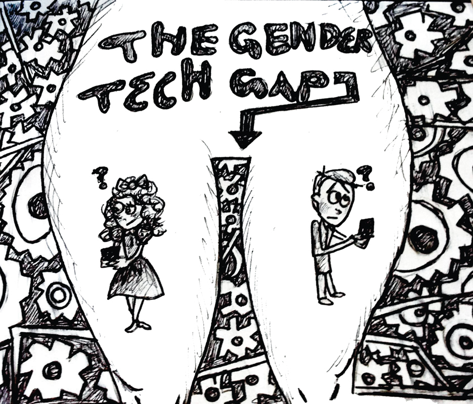

STATISTICS
- 62 million girls are denied an education all over the world.(UN Foundation)
- In Saudi Arabia, women are not allowed to drive and are discouraged from working jobs that would put them in contact with men. The unemployment rate for women is 34 percent for women, 7 percent for men.
- Women around the world aged 15-44 are more at risk from rape and domestic violence than from cancer, car accidents, war and malaria. The United Nations has a list of suggestions to help change this statistic, improving the lives of women and girls. (UN)
- Around the world, only 22 percent of all national parliamentarians are female. That is double the number in 1995, but still a marker of slow change. Running Start is an organization that helps bring young women into politics. Learn about their programs and events here. (UN)
- By 2018, there will be 1.4 million open technology jobs in the U.S. and, at the current rate of students graduating with degrees in computer science, only 29% of applicants will be women. Girls Who Code aims to educate and expose at least 1 million girls to computer science by 2020. Learn more about what they do here. (Microsoft Research)
- Women currently hold 24, or 4.8% of CEO positions at S&P 500 companies. Mentorship programs like Step Up help keep girls in school, getting them that much closer to an executive position. Learn how you can play a part. (Catalyst)
- Only 30% of the worlds researchers are women. Google has a program to inspire the next generation of tech innovators. Learn how to help girls gain exposure to careers in science and technology. (UNESCO)
